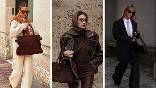

Наші колекції

Колекція 1
Ліва жінка: Верх: Вона одягнена у світлий трикотажний костюм, ймовірно, з вовни або кашеміру. Зверху накинута світло-коричнева накидка або шарф, що створює багатошаровість. Низ: Штани вільного крою, ймовірно, з такого ж матеріалу, як і верх. Аксесуари: Великі сонцезахисні окуляри в темній оправі, масивна сумка темно-коричневого кольору з замшевої шкіри. Центральна жінка: Верх: Темно-коричнева водолазка, поверх якої одягнена шкіряна куртка вільного крою. На голові – хустка, зав'язана у вигляді тюрбана, також темно-коричневого кольору. Низ: Штани темно-коричневого кольору, ймовірно, з атласної або шовкової тканини. Аксесуари: Масивні сонцезахисні окуляри в темній оправі, сумка темно-коричневого кольору. Права жінка: Верх: Чорний класичний піджак, під яким біла сорочка з краваткою. Низ: Чорні класичні штани. Аксесуари: Сонцезахисні окуляри в темній оправі, невелика чорна сумка.

Колекція 2
Ліва жінка: Верхній одяг: Об'ємна куртка-чебурашка з м'якого штучного хутра білого кольору. У неї широкий комір та довгі рукави. Светр: Під курткою видно білий в'язаний светр з високим коміром. Спідниця: Світла міні-спідниця, можливо, трикотажна або з щільної тканини. Головний убір: Біла в'язана шапка-біні. Шарф: Довгий білий шарф з бахромою, вільно обернутий навколо шиї. Сумка: Чорна стьобана сумка з ланцюжком через плече.